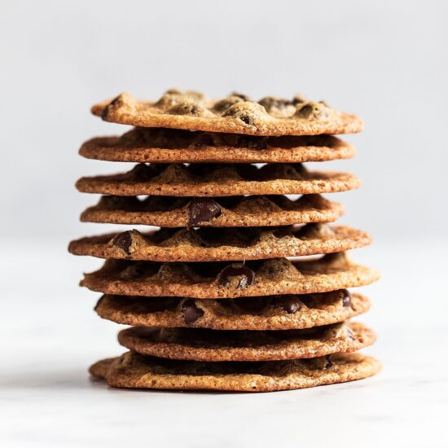

Oatmeal Cookies

Crispy Oatmeal Cookies
Quick and easy Thin and Crispy Oatmeal Chip Cookies for
when you're craving that satisfying crunchy chew in a cookie just like Tate's!
Ingredients
- 1 cup quick cooking oats
- ¼ cup all-purpose flour
- ½ teaspoon salt
- 1 ½ teaspoons baking powder
- 1 cup white sugar
- ½ cup butter, softened
- 1 egg
- 1 teaspoon vanilla extractr
Directions
- Preheat oven to 325 degrees F (165 degrees C).
Cover baking sheets with foil, then coat the foil
with a non-stick cooking spray.
- In a medium bowl, combine oats, flour, salt,
and baking powder. In a large bowl, cream sugar and
butter until fluffy. Beat in egg and vanilla.
Mix in the flour and oat mixture until just combined.
Drop dough by teaspoonfuls onto the prepared baking sheets,
2 1/2 inches apart.
- Bake at 325 degrees F (165 degrees C) for 10 to 12 minutes,
or until edges turn golden. Cool, then peel cookies off with your fingers.
Be sure to re-spray baking sheets with non-stick cooking spray between
batches..
Nutritional Facts
Per Serving: 44 calories; protein 0.4g; carbohydrates 5.9g; fat 2.1g; cholesterol 9mg; sodium 54.7mg.